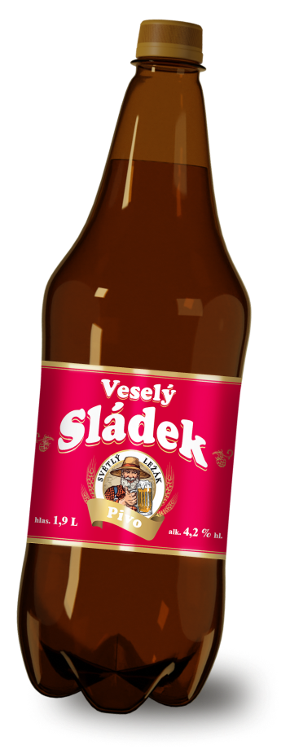

В Чехии пивовара называют sladek от слова slad, что в переводе на русский означает солод.
Настоящий пивовар в совершенстве владеет искусством создания уникальных рецептов хмельного напитка.
Sladek – старинная и уважаемая профессия, воплощение мастерства и таланта.

Cамый популярный сорт пива в Чехии
Lezak
Важнейшая особенность -
питкостьCветлый лагер низового брожения
Только натуральные ингредиенты:
чистая вода
ячменный солод
ароматный хмель
10 %
начальная плотность сусла4,2 %
содержание алкоголя1,9 л
объемSvetly Lezak
сорт пиваPitelnost
характеристика